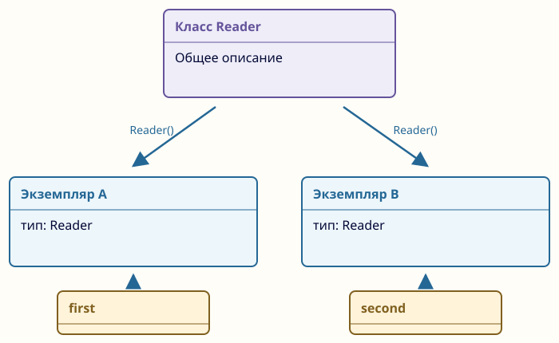
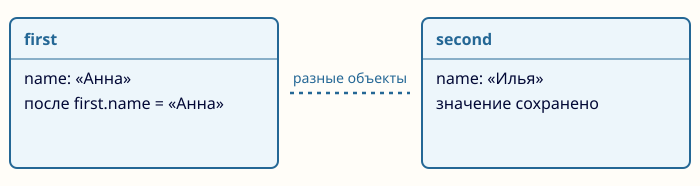
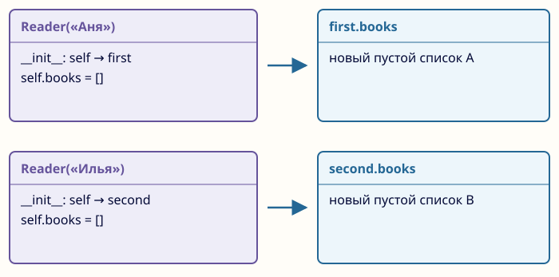
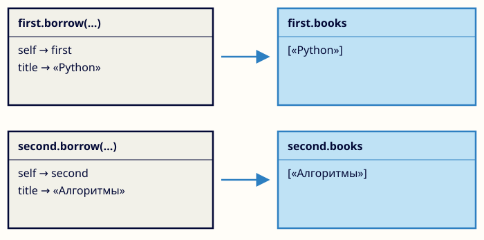
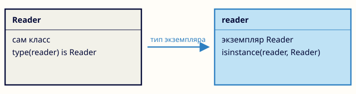

Глава 8.3
Классы и экземпляры класса
В этой главе определение Reader превращается в два отдельных экземпляра. Проследим создание, заполнение атрибутов и передачу получателя в self при вызове метода.
- Перед началом
- Объекты, ссылки и идентичность; главы 8.1–8.2
- После главы
- Различать класс Reader, вызов Reader(...) и созданный экземпляр.
- Среда
- Python 3.11 и новее · самостоятельные примеры
- Основа
- Модуль 8 исходного справочника · с. 543
Определение класса и создание экземпляра
В главе 8.1 класс Reader описывал данные читателя и выдачу. В главе 8.2 мы отделили объекты от имён и ссылок. Теперь соединим эти идеи: создадим экземпляры класса и проследим, откуда у каждого появляются свои данные.
Форма библиотечного билета задаёт названия полей, а заполненные билеты принадлежат конкретным читателям. Класс задаёт общее описание поведения своих экземпляров. На рисунке Reader отделён от двух созданных объектов. Золотистые карточки first и second — имена; их стрелки указывают на соответствующие экземпляры.

Инструкция class Reader: начинает определение класса. Двоеточие открывает тело, строки которого записываются с отступом. В первом примере собственных методов ещё нет: pass обозначает пустое тело. Имена классов по соглашению пишут в стиле CapWords, например Reader.
class Reader:
pass
first = Reader()
second = Reader()
print(type(first).__name__)
print(type(second).__name__)
print(first is second)Reader Reader False
Вызовы Reader() создают два экземпляра. Их тип одинаков, а идентичность различается. Имена first и second ссылаются на разные объекты.
По-простому: форма и заполненные билеты
Одна форма используется для оформления двух библиотечных билетов. Наличие общей формы не делает билеты одним документом.
Что есть что. Форма соответствует классу; заполненные билеты — экземплярам. Связь показывает происхождение экземпляров от одного класса.
Класс сам является объектом Python и допускает изменение. Бумажная форма объясняет только различие описания и экземпляров.
Пустые экземпляры уже различаются. Чтобы хранить данные читателей, добавим им атрибуты.
Атрибуты конкретного экземпляра
Два созданных экземпляра пока не содержат сведений о читателях. Добавим имя каждому из них, затем изменим имя первого. Это позволит увидеть, к какому объекту относится присваивание через точку.
Атрибут экземпляра хранит данные, доступные через объект. Запись first.name обращается к атрибуту name первого экземпляра. На рисунке показано состояние после переименования: Анна у first, Илья у second.

class Reader:
pass
first = Reader()
second = Reader()
first.name = "Аня"
second.name = "Илья"
print(first.name)
print(second.name)
first.name = "Анна"
print(first.name)
print(second.name)Аня Илья Анна Илья
Изменение first.name затронуло первый экземпляр. У второго значение сохранилось. Общее имя атрибута задаёт смысл поля, но значения находятся у разных экземпляров.
Таблица фиксирует состояние после последнего присваивания.
Справка по примеру
| Выражение | Значение |
|---|---|
| first.name | Анна |
| second.name | Илья |
| first is second | False |
Однако ручные присваивания можно забыть. У только что созданного Reader() атрибута name ещё нет. Начальное состояние лучше задавать при создании экземпляра.
Начальное состояние через __init__
Ручное заполнение работает, но данные легко забыть присвоить. Например, у экземпляра Reader() из первого опыта имени ещё нет. Начальные сведения лучше передавать при создании читателя.
Инициализатор __init__ устанавливает начальное состояние уже созданного экземпляра. На рисунке показаны два вызова: self получает соответствующий экземпляр, а выражение [] каждый раз создаёт новый список. Поэтому first.books и second.books ссылаются на разные списки A и B.

class Reader:
def __init__(self, name):
self.name = name
self.books = []
first = Reader("Аня")
second = Reader("Илья")
first.books.append("Python")
print(first.name, first.books)
print(second.name, second.books)
print(first.books is second.books)Аня ['Python'] Илья [] False
Запись Reader("Аня") передаёт строку в параметр name. Внутри __init__ присваивание self.name = name сохраняет её в атрибуте экземпляра.
Каждый вызов __init__ выполняет выражение [] заново. Поэтому у читателей разные списки книг.
Справка по примеру
| Экземпляр | name | books после append |
|---|---|---|
| first | Аня | ["Python"] |
| second | Илья | [] |
Проверка is возвращает False для списков. Значит, first.books и second.books ссылаются на разные объекты. Поэтому добавление Python в первый список оставило второй список пустым.
Когда начальное состояние задано, операции над ним можно оформить методами.
Метод выполняется для получателя
Теперь каждый читатель создаётся с именем и отдельным списком. Добавим к классу операцию выдачи. Её действие уже знакомо: сохранить название в списке выбранного читателя.
Метод экземпляра вызывается для получателя перед точкой. При обращении first.borrow("Python") экземпляр first автоматически передаётся в первый параметр self. Строка Python передаётся в title. На рисунке виден путь от получателя к списку, который будет изменён.

class Reader:
def __init__(self, name):
self.name = name
self.books = []
def borrow(self, title):
self.books.append(title)
first = Reader("Аня")
second = Reader("Илья")
first.borrow("Python")
second.borrow("Алгоритмы")
print(first.books)
print(second.books)['Python'] ['Алгоритмы']
Вызовы используют одно определение borrow, но разных получателей. При вызове через экземпляр Python автоматически передаёт его первым аргументом в self. Название книги передаётся в title. В первом случае self ссылается на first, во втором — на second.
По-простому: запись выдачи в нужный билет
Для выдачи книги выбирают билет читателя и вписывают название. Одинаковая процедура применяется к разным билетам.
Что есть что. Выбранный билет — получатель метода; self — ссылка на него внутри вызова; запись названия — append.
Вызов для first не переносит книгу в second. Общие данные могут появиться только при соответствующем устройстве программы.
У класса есть общие определения поведения, у экземпляров — конкретные данные. Проверка типа позволяет явно установить связь между ними.
Проверка принадлежности классу
При вызове мы выбирали конкретного читателя. Теперь проверим другую связь: к какому классу относится этот объект. Написание имени переменной эту связь не определяет.
Reader — сам класс, reader — имя его экземпляра. Проверка isinstance(reader, Reader) устанавливает принадлежность классу с учётом его подклассов. На рисунке класс отделён от экземпляра; стрелка обозначает их отношение.

class Reader:
def __init__(self, name):
self.name = name
reader = Reader("Аня")
print(isinstance(reader, Reader))
print(isinstance(reader, str))
print(type(reader) is Reader)True False True
В данном примере точный тип reader — Reader. Проверка type(reader) is Reader сравнивает именно тип. isinstance также принимает экземпляры подклассов, поэтому смысл этих проверок различается.
Разделим три похожие записи.
Справка по примеру
| Запись | Значение |
|---|---|
| Reader | Сам класс |
| Reader("Аня") | Создание экземпляра с начальным именем |
| reader | Имя, связанное с уже созданным экземпляром |
Операции программы обычно выражают через методы, а проверку типа добавляют при необходимости. Теперь определения класса, инициализация и обращение к экземпляру образуют последовательную цепочку.
Частые ошибки
| Ошибка | Что происходит | Как исправить |
|---|---|---|
| Писать reader = Reader без скобок | Имя связано с классом, экземпляр не создан | Для создания вызвать Reader(...) |
| Считать __init__ созданием объекта | Инициализация происходит после создания экземпляра | Разделять создание и установку начальных данных |
| Считать self отдельной копией | self ссылается на получателя текущего вызова | Связывать self.name с конкретным экземпляром |
| Предполагать независимость всех вложенных данных | Экземпляры могут ссылаться на общий список | Создавать отдельные списки, когда требуется независимость |
Шпаргалка и термины
Объявление и вызов
class Reader: определяет класс. Reader("Аня") создаёт и инициализирует экземпляр.
Данные экземпляра
self.name и self.books относятся к получателю. Выражение [] в __init__ создаёт новый список при каждом вызове.
Операция экземпляра
reader.borrow("Python") вызывает метод для reader. Внутри метода self ссылается на reader.
- Класс
- Объект, определяющий поведение экземпляров. Reader — класс читателя.
- Экземпляр
- Конкретный объект класса. first и second — разные экземпляры Reader.
- Инициализатор
- Метод __init__, задающий состояние уже созданного экземпляра. Здесь он сохраняет имя и создаёт список.
- Получатель
- Объект перед точкой при вызове метода. Для first.borrow(...) получатель — first.
- isinstance
- Проверка принадлежности классу с учётом подклассов. isinstance(reader, Reader) возвращает True.
Итог главы
- Различать класс Reader, вызов Reader(...) и созданный экземпляр.
- Атрибуты экземпляра хранят конкретные данные; методы описываются в классе.
- Отдельные списки создаются отдельными выражениями []. Само наличие двух экземпляров независимости списков не гарантирует.